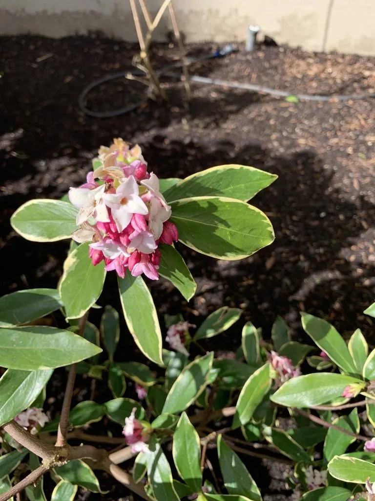

灌木与花木 · 植物界
瑞香 Daphne odora

早春开花、香气浓郁的常绿灌木，花朵虽小却香飘满园，是中国传统名花，因花期恰逢春节而寓意吉祥。
- 分类
- 门被子植物门纲木兰纲目锦葵目科瑞香科属瑞香属
- 栖息环境
- 海拔 500–1500 米的山坡林下与溪边，喜温暖湿润和半阴环境
- 地理分布
- 原产中国长江流域及华南地区，浙江、江西、湖南等地有分布
- 保护级别
- 暂无评估；中国未列入国家重点保护野生植物名录
物种志
瑞香为常绿灌木，高可达 1.5 m，枝条粗壮，树皮灰褐色；叶片互生，长椭圆形，革质，边缘全缘并微反卷，表面深绿。花期 2–4 月，头状花序顶生，由数朵至十余朵小花组成，花被筒状、4 裂，外面紫红色、内面白色，香气浓郁；果实为核果，卵形，成熟时红色，但结果较少。
瑞香原产中国长江流域及华南地区，喜温暖湿润、半阴环境，忌强光暴晒与高温，适宜疏松肥沃、排水良好的酸性土壤，不耐寒，北方多盆栽。它是中国传统名花，栽培历史逾千年，因花期正值春节前后，被视为吉祥之花；花朵虽小，但香气浓烈，可提取香精。瑞香的根、茎与叶可入药，但全株有毒，汁液接触皮肤可能引起过敏，修剪时宜戴手套。
形态与习性
- 株高可达 1.5 m，枝条粗壮
- 花期2–4 月，花被筒状、外紫内白
- 果期9–10 月，核果红色
- 光照喜半阴，忌强光暴晒
- 水分喜湿润，怕积水
- 土壤疏松肥沃的酸性壤土
- 主要用途庭院与盆栽观赏、提取香精、根茎入药
趣味知识
- 瑞香的花朵很小，但香气非常浓郁，一朵开花就能让满屋飘香。
- 瑞香花期恰逢春节前后，因此在民间被视为吉祥、祥瑞的象征。
- 瑞香全株有毒，汁液接触皮肤可能引起过敏，修剪时最好戴手套。
- 瑞香喜半阴，夏季强光暴晒容易导致叶片灼伤，需要注意遮阴。